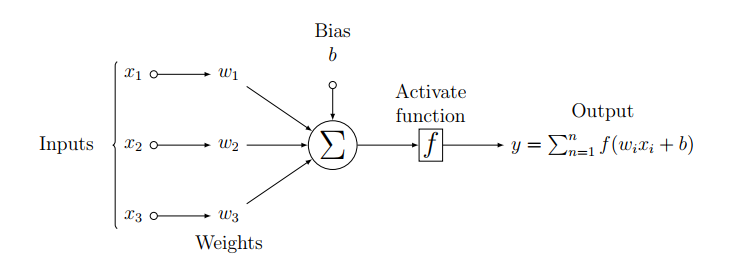
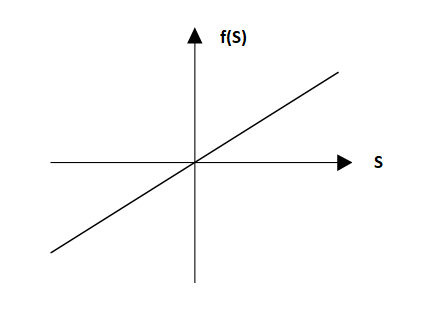
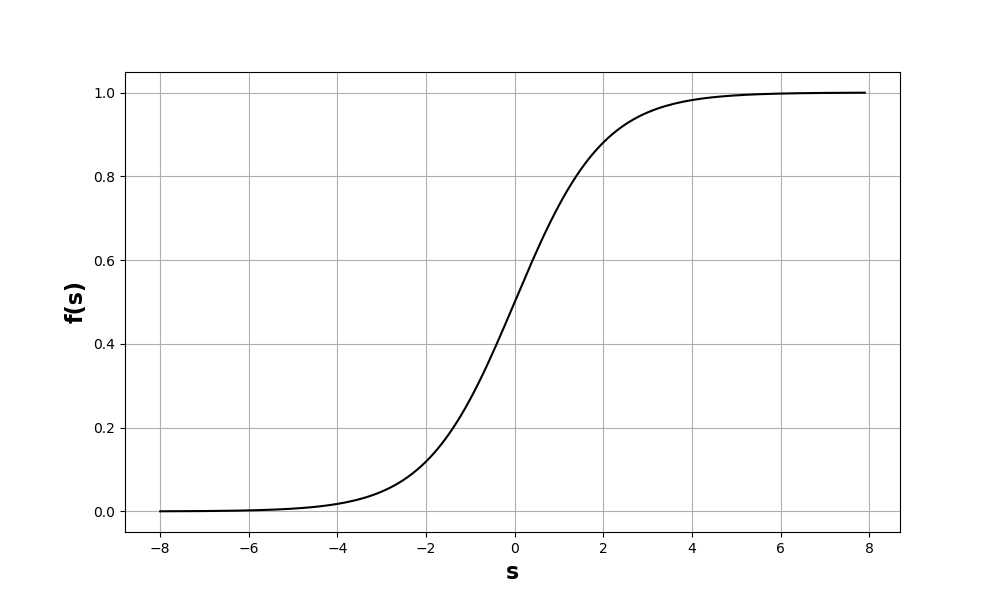
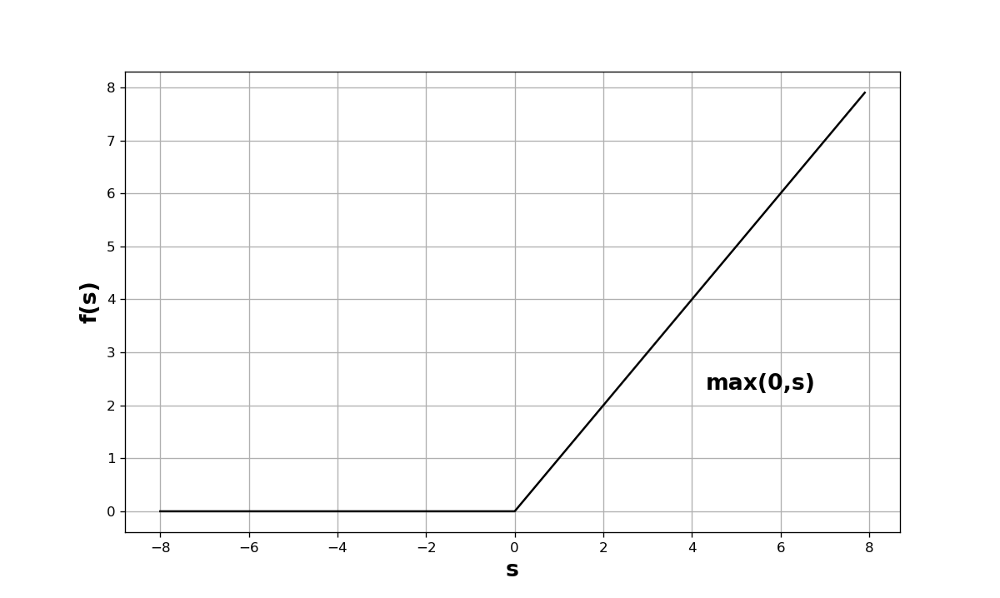
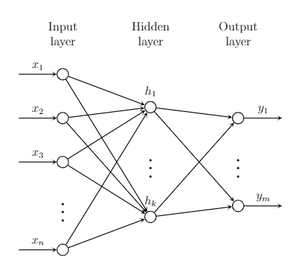

Artificial Neural Network
- In this section, we will discuss about :
- Introduction
- An Artificial neuron
- Activation functions
- Architecture of a neural netwrok
- Training a neural network
- Gradient descent algorithm
- Backpropagation algorithm
- Input unit
- Summing junction
- Activation function
- Sigmoid activation function
- ReLU activation function
Introduction
In the human brain, a neuron receives strong signal (more than a threshold) through synapses, located on the dendrite. The neuron gets activated and passes the signal through a long, thin structure called axon, to the synapses of the other neurons. The biological neuron's connection and working principal are very complex, but the mathematical model of an artificial neuron is much more simplified. In Figure, the architecture of an artificial neuron is demonstrated.
Figure : Architecture of an artificial neuron of the neural network. It receives input signals, then it processes the signals in the summing junction.
Before producing the final output, the output of the summing junction is passed through the activation function.
An Artificial neuron
A neuron is a fundamental unit of a neural network. An artificial neuron has three basic components as shown in Figure above. These are:Activation functions
There are various choices of the activation functions, including linear and non-linear activation functions. In this section, few of the mostly used activation functions are described.Linear activation function

Figure : Linear activation function
The linear activation function (Figure \ref{linear_activation_function}) can be mathematically formulated as: $$f(s)=cs$$ Where $c$ is a constant. If $c=1$, then the activation function is called identity function, where the output of the neuron is equal to the input of the neuron. In that case, the output of a neuron can be presented as:
$$f(s)=w_0+w_1x_1+w_2x_2+....+w_nx_n$$
This representation can be interpreted as the linear regression model, where $w_0,w_1,w_2,...,$ are the regression coefficients. It is not so common to use the linear activation function in a neural network architecture.
Non-linear activation function
The neural network model is designed to learn and represent any complex mapping function that holds the relation between inputs and outputs. Linear activation functions are limited to learn complex mapping functions from the data. Non-linear activation functions are widely used in the neural network to separate the data, that is not linearly separable. Non-linear activation functions are able to discover the non-linear mapping functions from inputs to outputs. A couple of popular activation functions are:Sigmoid activation function

Figure : Sigmoid activation function
Sigmoid functions are used to introduce the non-linearity in the neural network model. Its graph is shown in Figure \ref{sigmoid_activation_function}, which is a ‘S’ shaped graph with values bounded between 0 and 1. This function is a strictly non-decreasing function.\par
A mathematical formulation of an example of a sigmoid function is called logistic function, defined by:
\begin{equation}
f(s)=\frac{1}{1+e^{-s}}
\end{equation}
This function is differentiable at every point, which is important for the gradient based learning algorithms.
This function is computationally very expensive for a large network because of the presence of the exponential term.\par
One interesting property of the logistic function is that, the derivative of the logistic function can be written as a function of itself. It provides an advantage while neural network will be trained using the backpropagation algorithm (algorithm is described in Section \ref{backpropagation_algorithm}).
Rectified Linear Unit (ReLU) activation function

Figure : ReLU activation function
This activation function is also very popular and defined as:
$$f(s)=max(0,s)$$
It means, when the input is less than or equal to $0$ , then the output of the activation function is $0$. When the input $s$ is greater than 0, then the output is equal to the input $s$. So, the range of the function is $0$ to infinity.\\
An important characteristic of the ReLU function is its sparsity. If the output of the summing junction of a neuron is negative, then the output of the neuron or activation function will be zero, which will make the neuron inactive. The ReLU function makes the network sparse and computationally efficient.
Architecture of a neural netwrok
In this section, the architecture of an Artificial Neural Network (ANN) has been described. A fundamental element for a neural network is its neurons, which are called as units of the neural network.
Figure : An architecture of the fully connected artificial neural network.
There are three types of neurons in the network; input layer neurons, hidden layer neurons, and output layer neurons.
Input layer neurons take feature vectors as an input without performing any operation or computation on the input vectors.
Hidden layer neurons are the neurons of the neural network which have no direct connection with the input and output data,
hence called as hidden units or neurons. They take input from the input neurons and send the processed information according to the Equation mentioned in summing_junction and
output of an activation function to the subsequent layers neurons. All the hidden neurons are connected with preceding input neurons and subsequent
layers (hidden or output layer). The weights are associated with the connections between the neurons, it is called fully connected neural network. The neurons
that are in the same layer are not interconnected.
Output layer neurons receive processed signals from the previous hidden layers and process the signals like hidden layers neurons and send the signals out of the model.
In neural network architectue Figure, the network receives $n$-dimensional feature vector as an input, which
has $k$ hidden neurons and $m$ neurons in the output layer. For the sake of simplicity, this network can be referred as a $n-k-m$ network.
It can be called as a $2$-layer neural network as well, since it has only one hidden layer and one output layer.